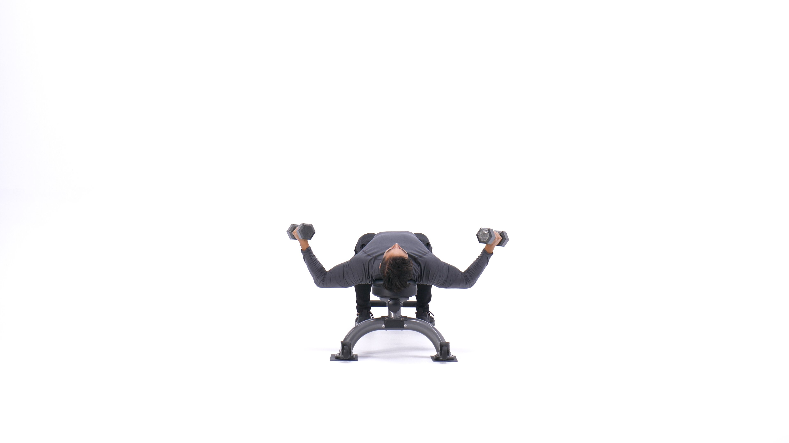
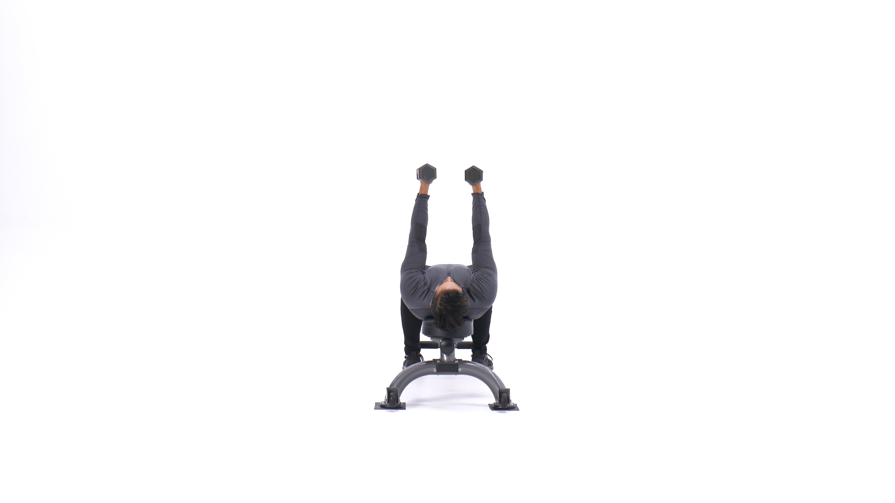

The dumbbell chest fly is a popular exercise that targets the pectoral or chest muscles. It attempts to isolate the chest muscles, stretching and contracting them while limiting involvement of the shoulders. Unlike a press, where the elbows bend and flex, flyes should keep a relatively consistent elbow angle. The motion is sometimes compared to "hugging a tree." Dumbbell flyes are usually performed for moderate to high reps, such as 8-12 reps per set or more, as part of a chest or upper-body focused workout.
1. Lie down on a flat bench with a dumbbell on each hand resting on top of your thighs. The palms of your hand will be facing each other.
2. Then using your thighs to help raise the dumbbells, lift the dumbbells one at a time so you can hold them in front of you at shoulder width with the palms of your hands facing each other. Raise the dumbbells up like you're pressing them, but stop and hold just before you lock out. This will be your starting position.
3. With a slight bend on your elbows in order to prevent stress at the biceps tendon, lower your arms out at both sides in a wide arc until you feel a stretch on your chest. Breathe in as you perform this portion of the movement. Tip: Keep in mind that throughout the movement, the arms should remain stationary; the movement should only occur at the shoulder joint.
4. Return your arms back to the starting position as you squeeze your chest muscles and breathe out. Tip: Make sure to use the same arc of motion used to lower the weights.
5. Hold for a second at the contracted position and repeat the movement for the prescribed amount of repetitions.
Variations: You may want to use a palms facing forward version for different stimulation.
1. Works the chest muscles differently than presses.
2. Great accessory movement on chest day.
3. Effective chest training even with relatively light weight.
This is the Chest Fly in the down position.
This is the Chest Fly in the up position.
